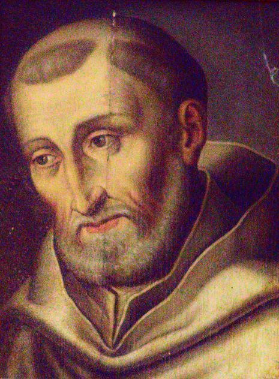
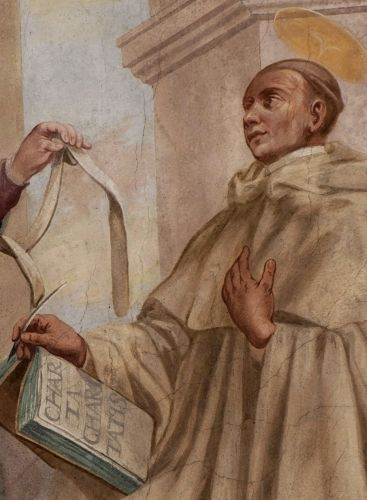
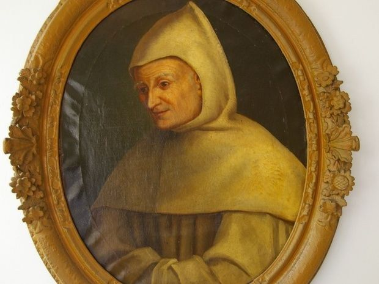
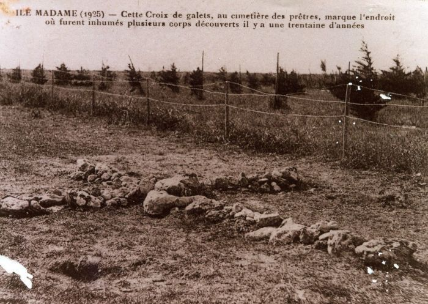
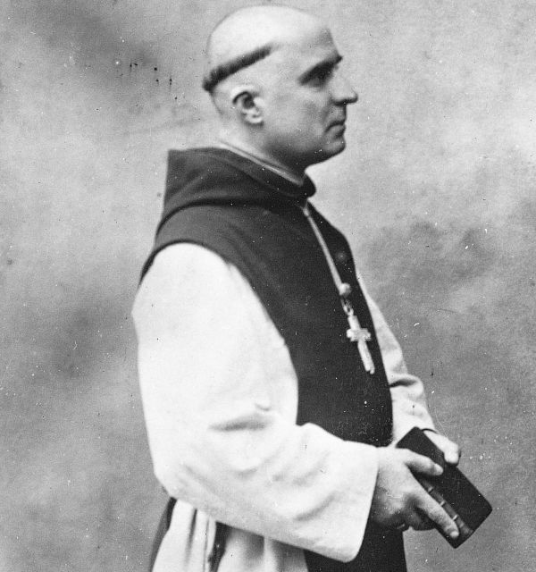
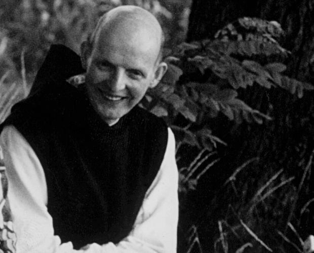

Son nom historique est « Abbaye Notre Dame de Saint-Lieu ».
L’abbaye de Sept-Fons a vécu, depuis le XIIème siècle, maintes péripéties qui l’ont amenée à ce qu’elle est aujourd’hui.
L’Abbaye d’avant la Révolution
En 1098, des moines venus de l’Abbaye de Molesme en Champagne, fondèrent le monastère de Cîteaux au sud de Dijon. Ils souhaitaient y vivre sans compromis, en la prenant non pas à la lettre, mais au sérieux, la Règle qu’ils avaient fait profession d’observer. Celle-ci avait été écrite au VIe siècle par celui qu’on appellera le Père des moines d’Occident : saint Benoît.

St Bernard
En 1112, une troupe de trente jeunes seigneurs ayant à leur tête Bernard de Fontaine, le futur Abbé de Clairvaux, se présente au nouveau monastère. Bernard deviendra l’un des saints les plus marquants de l’Europe médiévale. Cette arrivée massive est le début de l’essor de l’Ordre de Cîteaux dans l’Europe entière.
St Étienne Harding

En 1115, saint Étienne Harding, auteur de la charte de charité, troisième Abbé de Cîteaux, envoyait saint Bernard fonder Clairvaux. Trois ans plus tard, Bernard fondait en 1118 l’Abbaye de Fontenay. Celle-ci, à son tour, fondait l’Abbaye de Saint-Lieu à Sept-Fons en 1132. Le petit groupe des fondateurs avait à sa tête Richard de Montbard, accompagné de son frère Guillaume, proches parents de Bernard de Fontaine.

Dom Eustache de Beaufort
Pendant des siècles à Sept-Fons, la vie des moines fut régulière et rayonnante. Puis lentement, la ferveur diminua. L’Abbaye tombait en ruines et se dépeuplait lorsqu’en 1656 fut nommé comme Abbé de Sept-Fons Dom Eustache de Beaufort, qui prit possession de son monastère en 1661. Moins de deux ans plus tard, converti à la vie régulière, il commençait une réforme complète de la vie monastique. Sous sa main ferme, Sept-Fons vit de nouveau les vocations affluer. La ferveur renaissait. Pendant tout le XVIIIe siècle, jusqu’à la Révolution, l’Abbaye connut une de ses plus belles périodes.

Un successeur de Dom Eustache, Dom Dorothée Jalloutz, reconstruisit le monastère dans le style de l’époque. Achevée en 1789, l’Abbaye fraîchement rénovée subit les conséquences de la Révolution Française. En 1791, les moines sont expulsés. L’Abbaye est vendue comme « bien national ». Pendant la Terreur, plusieurs moines de Sept-Fons confessent leur foi sur les tristement fameux pontons de Rochefort. Il faudra attendre 1845 pour que les moines reviennent habiter Sept-Fons. Après son rachat par l’Abbé du Gard Dom Stanislas Lapierre, la vie monastique a pu reprendre dans le Bourbonnais, et depuis lors elle n’a plus jamais cessé.
Dom Jean-Baptiste Chautard

Le successeur de Dom Wyart, Dom Jean-Baptiste Chautard (1899-1935) marqua de sa forte personnalité religieuse l’Église de France au début du XXème siècle. Il joua un rôle important et efficace, obtenant de Clemenceau que soient épargnées à la plupart des monastères de l’Ordre les conséquences des lois laïques. Celles-ci prévoyaient l’expulsion des religieux et la confiscation de leurs biens. Par son livre « L’Âme de tout Apostolat », il exerça une influence durable sur des générations de prêtres et de laïcs.
Père Jérôme KIEFER
La communauté a connu un bon nombre de moines d’envergure, notamment le Père Jérôme KIEFER (1907-1985).
